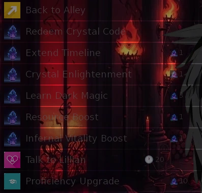
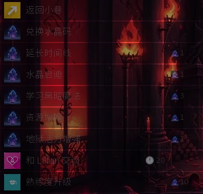

Select a screenshot to enlarge it. Screens show example inventories and progress.
Crystals buy time and permanent growth
Crystals are a separate currency from Gems and Dragon Coins. They pay for timeline extensions, selected skills and permanent upgrades. Check the Crystal balance in your inventory before spending: a Crystal used on an optional purchase is also one you cannot use to buy ten more days or reserve for New Game+.
Several Crystal-shop purchases are repeatable. A named purchase appearing in the shop does not mean it is a once-per-save reward. Conversely, a milestone that awards a Crystal usually has its own one-time claim record. The two rules should not be confused.
How the Doomsday countdown works
A fresh timeline begins on day 1 at 08:00 with 60 days on the Doomsday countdown. This is an in-game deadline: leaving an action menu open does not consume days in real time. Travel, training, work and other time-costing actions advance the clock. Watch the displayed countdown after an overnight activity rather than estimating solely from your real-world session length.
Health, Energy and Calm can also affect how much time an action costs. At less than 20% of a resource’s maximum, that resource multiplies the time cost by 1.5; an empty resource uses a ×2 multiplier instead. Multiple low resources compound. Recovering before a long action can protect both your resources and your remaining days.
Before the world is saved, letting the countdown reach zero can end the run. Use Extend Timeline while you still have time and shop access: 1 Crystal adds 10 days. There is no normal once-only purchase limit. After the HUD changes to World Saved, the deadline is disabled and the extension action is unavailable. Starting New Game+ creates a new 60-day countdown.
Where to spend Crystals
| Guide | Route | Hours |
|---|---|---|
| Lillian | Medieval → Kings Demesne → Back Alleys → Secret Lair → Lillian’s Lair | 24 hours |
| Seraph | Future → Fringe Zone → Weather Control → Cloudy Path → Seraph’s Sanctuary | 24 hours |
Use the location’s normal action list. The Secret Lair and Cloudy Path entry actions themselves take no time; reaching the district and approach still follows ordinary travel rules. Individual purchases can have their own requirements. Having Crystals does not remove a venue or content-access requirement.
Weather Control is the map button; entering it opens Sky-Level Atmospheric Management Station, where the onward routes are listed.

Crystal-shop reference
The purchases below take 0 minutes themselves. Prices are in Crystals. The maximum-resource boosts are permanent growth, not healing items.
| Seller | Action | Price | Effect and limit |
|---|---|---|---|
| Both guides | Extend Timeline | 1 | +10 days to the active Doomsday countdown. Repeatable before World Saved; unavailable afterward. |
| Both guides | Crystal Enlightenment | 1 | Learn one randomly selected unknown, non-exclusive skill. Repeatable while an eligible unknown skill remains; the result cannot be chosen. |
| Seraph | Learn Light Magic | 3 | Learn Light Magic once; the action is hidden once learned. |
| Seraph | Instant 1000 Wealth | 1 | Gain $1,000. Repeatable. Consider whether an ordinary income source would save a Crystal. |
| Seraph | Divine Vitality Boost | 1 | Permanently increase maximum Health by 10. Repeatable; increasing the maximum does not refill current Health. |
| Lillian | Learn Dark Magic | 3 | Learn Dark Magic once; the action is hidden once learned. |
| Lillian | Resource Boost | 1 | Gain 50 Common, 20 Rare and 3 Epic of EACH resource category: materials, fabrics and ingredients. Repeatable. |
| Lillian | Infernal Vitality Boost | 1 | Permanently increase maximum Energy by 10. Repeatable; increasing the maximum does not refill current Energy. |
| Both guides, when eligible | Proficiency Upgrade | 10 | Purchase the advanced proficiency upgrade. Its content-access requirement still applies. It must be bought again after New Game+. |
Proficiency Upgrade is listed separately from a starting-profession choice. It requires Patreon Adventurer Tier+ access. Buying it changes your proficiency to Patreon Master, upgrades your bedroom and opens advanced training and work options. New Game+ explicitly resets the purchased upgrade while preserving earned character stats and retained equipment levels.
Earn Crystals: repeatable sources and milestones
| Source | What to expect |
|---|---|
| Gonzo’s dungeon shop | Trade 25 Dragon Coins for 1 Crystal, or 23 with Negotiation. Repeatable while you have coins and meet the wandering merchant. |
| Mining | Crystal fragments accumulate; each 100 fragments automatically becomes 1 whole Crystal. Pickaxe and mining rules still apply. |
| Dungeon encounters | Some successful encounter results award whole Crystals. These are chance-based; encountering a crystal-themed room does not guarantee currency. |
| Tutorial quests | Four individual quests pay 1 Crystal each. Claim all fifteen tutorial rewards for a further 3 Crystals: 7 in total from the tutorial panel. |
| Relationship mastery | Each eligible relationship reaching 3,000 points or In Love can award 1 Crystal. Return to your current profession bedroom to collect the recognition. Once per eligible person, including across New Game+. |
| Caterpillar populations | Combined population milestones of 500,000 / 5,000,000 / 100,000,000 award 1 / 3 / 5 Crystals. Visit the Present forest or Medieval Whispering Woods to trigger their recognition. |
| Combat milestones | 500 Cuckers: return to the Medieval Rural Farm for 1 Crystal. 50 Ratmen: visit Lillian’s Lair for 1 Crystal. These count the specified enemy type, not every enemy or every rat. |
| Other activities | Guild progression, Kupie achievements, the original Haunted Mansion and particular one-time challenges have their own rewards. Follow their dedicated guides and collect the actual award; a trophy entry alone does not pay Crystals. |
Relationship, population and enemy-milestone rewards are one-time awards. A new timeline does not turn the same already paid milestone into a repeatable Crystal source. Use the genuinely repeatable coin trade or mining if you need an ongoing supply.
The Dragon Coin route: what remains reliable
Gonzo’s offer is a direct trade in his shop: 25 Dragon Coins → 1 Crystal, discounted to 23 by Negotiation. The shop loops after a purchase, so you may buy another if you have enough coins. Gonzo is a wandering encounter; neither his location nor an immediate encounter is guaranteed.
The community floor-13 route still has a concrete basis: each generated water floor attempts to place one underwater Dragon Coin. After you have unlocked floor 13 in the floor picker, collect its coin, leave, then enter a newly generated floor 13 to look for the next. Entering through Explore Ancient Catacombs and using the dungeon exit take no time themselves. Actual movement normally costs 4 minutes per step, reduced by 1 each for Fleet Footed and an active Time buff, before resource-related time penalties. Plan short paths and recover when necessary. The coin route is repeatable, but the old fixed “one day for ten days” estimate is not a guaranteed timetable. Seek Gonzo on an eligible ordinary floor; the normal generation roll to add him is 10%, with a suitable placement also needed.
Kupie’s shop offers a Dragon Coin for $1,000,000, with one purchase per in-game day and shop stock also required. Rebirth does not erase that day’s Dragon Coin purchase limit. It is an expensive backup source, not a cheap Crystal conversion. The home action named Recycle Crystals is a separate conditional one-time repair, not Gonzo’s coin exchange.
Plan spending around the next decision
- If the deadline is becoming tight, reserve a Crystal for Extend Timeline before buying optional growth. Buying it at either guide extends the same countdown.
- Save 5 Crystals if you intend to start New Game+. Allow another 10 if you want to repurchase Proficiency Upgrade in the new timeline and meet its access requirement.
- For a known missing magic skill, compare the direct 3-Crystal purchase with random Enlightenment. Enlightenment cannot promise a particular result.
- Compare Resource Boost with your actual building, tailoring and crafting needs. One purchase gives all three categories, including their Epic resources.
- Keep ordinary income and healing options in mind before converting a scarce Crystal into $1,000 or buying a maximum-resource increase when you only need recovery.
Crystals also fund specific services outside these two shops, including Sylwithe’s upgrades and selected advanced activities. Check the individual action’s cost; this shop table is not a promise that every Crystal service costs 1.
Crystal-code entry and related references
Lillian’s Redeem Crystal Code action opens the code-entry screen and takes no time. Use a code published for your version through an official channel, exactly as supplied. The game tracks redeemed codes, including through New Game+, so restarting a timeline does not make a previously redeemed code reusable. This guide does not list unverified or private codes.
Related guides: Lillian, Seraph, Items, Caterpillars, Fighters Guild and Love Training.
Related progression guides: New Game+ and Postgame · Objectives, Tutorials and Trophy Goals
水晶：延长期限与永久成长
水晶、宝石与龙币是三种不同货币。水晶可用来延长时间线、学习特定技能，以及购买永久强化。花费前先查看库存余额：用于可选强化的水晶，也就不能再用来换取十天时间，或留作新游戏+的费用。
水晶商店中有多项可重复购买的服务。动作有固定名称，不代表它只能买一次；反过来，奖励水晶的里程碑通常各自有一次性领取记录。购买规则和奖励规则需要分开看。
末日倒计时如何推进
新时间线从第1天08:00开始，末日倒计时为60天。这是游戏内期限：停留在动作菜单上，不会按现实时间消耗天数。旅行、训练、工作等有耗时的动作才会推进时钟。跨夜活动结束后，应查看实际倒计时，不要用现实游玩了多久来估算。
生命、精力与镇定也会影响动作耗时。某项低于其上限的20%时，会让耗时乘1.5；该项耗尽时，则改为乘2。多项同时偏低会叠乘。开始长时间活动前先恢复状态，能同时节省资源与剩余天数。
世界获救前，倒计时归零可能使本次游玩结束。请在仍有时间、还能访问商店时使用延长时间线：1颗水晶增加10天，正常情况下可以重复购买。当时间栏变为世界已获救时，期限停用，该动作也不再提供。开启新游戏+后，会重新获得60天倒计时。
水晶商店在哪里
| 人物 | 路线 | 在场时间 |
|---|---|---|
| Lillian | 中世纪 → 国王领地 → 后巷 → 秘密巢穴 → Lillian的巢穴 | 全天 |
| Seraph | 未来 → 边缘区 → 天气控制 → 云雾小径 → Seraph的圣所 | 全天 |
抵达后，从地点的常规动作列表选择服务。「秘密巢穴」与「云雾小径」这两个入口动作本身不耗时；前往所在区域与沿途地点，仍按正常旅行规则计算。个别购买项目还有自身条件，持有水晶不会解除地点或内容的访问限制。
地图上的「天气控制」打开的是地点标题为「天空级大气管理站」的场所；后续路线从那里选择。

水晶商店项目表
下表动作本身均耗时0分钟，价格单位为水晶。资源上限强化属于永久成长，不能当作即时恢复道具。
| 提供者 | 动作 | 价格 | 效果与限制 |
|---|---|---|---|
| 两处均有 | 延长时间线 | 1 | 为仍在运行的末日倒计时增加10天。获救前可重复购买，世界已获救后不再提供。 |
| 两处均有 | 水晶启迪 | 1 | 随机学会一项尚未掌握的非专属技能；仍有符合条件的未知技能时可继续购买，不能指定结果。 |
| Seraph | 学习光明魔法 | 3 | 学会光明魔法；掌握后该动作隐藏。 |
| Seraph | 立即获得1000财富 | 1 | 获得1,000财富，可重复购买。使用前可先比较普通赚钱方式，避免不必要地消耗水晶。 |
| Seraph | 神圣活力增强 | 1 | 生命上限永久增加10，可重复购买；提高上限不会同时补满当前生命。 |
| Lillian | 学习黑暗魔法 | 3 | 学会黑暗魔法；掌握后该动作隐藏。 |
| Lillian | 资源增幅 | 1 | 材料、布料、原料各获得普通50、稀有20、史诗3；三个类别全部发放，可重复购买。 |
| Lillian | 地狱活力增强 | 1 | 精力上限永久增加10，可重复购买；提高上限不会同时补满当前精力。 |
| 满足条件时，两处均可 | 熟练度升级 | 10 | 购买进阶熟练度升级，仍需满足其内容访问条件。开启新游戏+后需要重新购买。 |
「熟练度升级」与选择初始职业不同。这项升级需要Patreon Adventurer Tier+访问资格。购买后，熟练度会变为Patreon 大师，卧室得到强化，并开放进阶训练与工作选项。新游戏+会明确重置这项已购升级，但保留已获得的角色属性与可保留装备的等级。
获得水晶：可重复来源与里程碑
| 来源 | 奖励与注意事项 |
|---|---|
| Gonzo的地下城商店 | 25枚龙币换1颗水晶；掌握谈判后为23枚。只要有足够龙币并遇到这位游商，就可重复兑换。 |
| 采矿 | 水晶碎片会累计，每100片自动合成1颗完整水晶；仍需遵守镐具与采矿本身的规则。 |
| 地下城遭遇 | 部分遭遇的成功结果会给完整水晶，但带有水晶主题的房间并不保证产出货币。 |
| 教程任务 | 四项单独任务各给1颗水晶；十五项奖励全部领取后，再得3颗，教程面板合计可得7颗。 |
| 关系培养 | 符合条件的关系达到3,000点或恋爱中后，可获得1颗水晶。返回当前职业对应的卧室领取认可奖励；每人限一次，跨新游戏+也不会重复发放。 |
| 毛毛虫种群 | 两时代合计种群达到500,000／5,000,000／100,000,000，分别奖励1／3／5颗水晶。前往现代森林或中世纪低语森林触发相应认可。 |
| 战斗里程碑 | 击败500只Cucker后返回中世纪乡间农场，可得1颗；击败50只鼠人后前往Lillian的巢穴，可得1颗。计数针对指定敌人，不是所有敌人或所有鼠类。 |
| 其他活动 | 公会进度、Kupie成就、原版闹鬼宅邸及部分一次性挑战各有奖励。请按相应指南实际领取；奖杯条目本身不会额外发水晶。 |
关系、种群与指定敌人的里程碑都属于一次性奖励。开启新时间线，不会把已经领过的同一里程碑变成水晶日常。需要长期来源时，可考虑真正能重复的龙币兑换或采矿。
龙币路线：哪些规则仍然可靠
Gonzo商店的兑换规则明确：25枚龙币换1颗水晶，掌握谈判后降为23枚。购买后会返回商店菜单，龙币足够就能继续买。Gonzo属于游商遭遇，出现地点与能否立刻遇到都不保证。
社区攻略的第13层路线仍有依据：每次生成的水下楼层会尝试放置一枚水下龙币。在楼层选择器中解锁第13层后，可以进去取币、离开，再进入重新生成的第13层寻找下一枚。「探索古代地下墓穴」入口动作与地下城退出操作本身不耗时；实际移动通常每步4分钟，步履轻盈技能和生效中的时间增益各减1分钟，之后仍受资源过低的耗时惩罚影响。尽量规划短路线，并及时恢复状态。这条取币路线可以重复，但旧攻略固定「花一天换十天」的估算不是保证。Gonzo则应在允许游商的普通楼层寻找，常规生成时有10%的添加判定，还需找到合适位置。
Kupie商店每枚龙币售价1,000,000财富，并且每个游戏日只能购买一枚，还需要有库存。重生不会清除当天的龙币购买限制。这是一条昂贵的备用来源，不能视作便宜的水晶兑换。家中的「回收水晶」是另一个有条件的一次性修复动作，与Gonzo的龙币兑换无关。
按下一步目标安排支出
- 期限吃紧时，先为「延长时间线」留一颗水晶，再考虑可选强化。两处商店延长的是同一个倒计时。
- 打算开启新游戏+时，先留5颗。如果新周目还要重新购买熟练度升级，则另留10颗，并确认届时能满足访问条件。
- 明确缺少某项魔法时，可比较3颗水晶直接学习与随机启迪。启迪不能保证抽到指定技能。
- 按实际建设、服装和制作需求衡量资源增幅。一次购买会发放全部三个资源类别，包括史诗资源。
- 如果只是需要即时恢复，先考虑普通回复方式；如果只是缺钱，也可先考虑普通收入，避免把稀缺水晶换成1,000财富。
两处商店之外，Sylwithe的强化等特定服务也会消耗水晶。请查看各动作自己的价格；本表不表示所有水晶服务都只收1颗。
水晶码入口与相关参考
Lillian的兑换水晶码动作会打开输入画面，本身不耗时。请使用官方渠道为当前版本公布的兑换码，并按原样输入。已兑换记录会保留至新游戏+，重开时间线不能让用过的码重新生效。本页不列未经核实或非公开的兑换码。
相关指南：Lillian、Seraph、物品、毛毛虫、战士公会与Kupie 的爱之训练。
相关成长指南：新游戏+与通关后玩法 · 任务、教程与奖杯目标
CC BY-SA 4.0. Game images © Chronoromancer Studio.